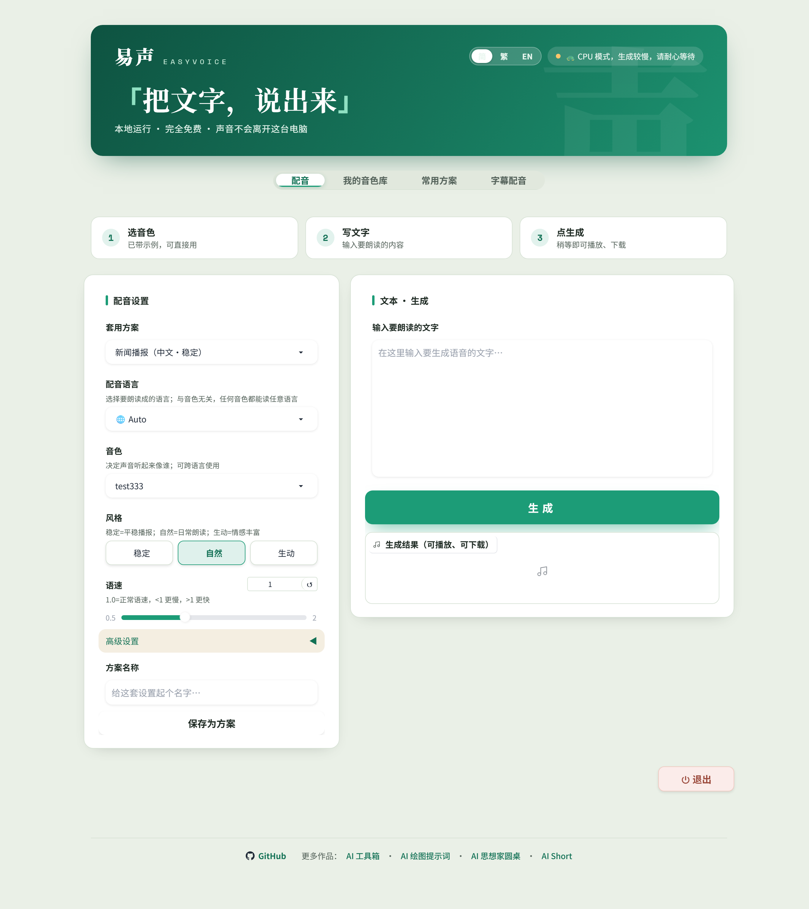
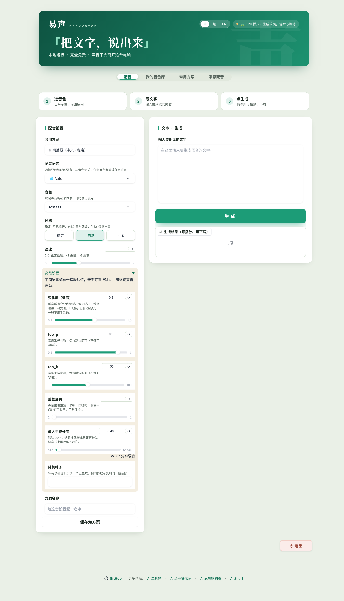
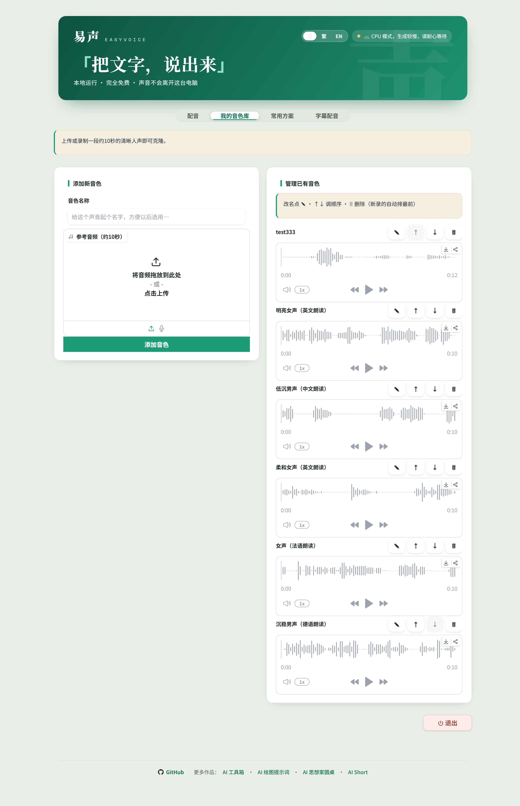
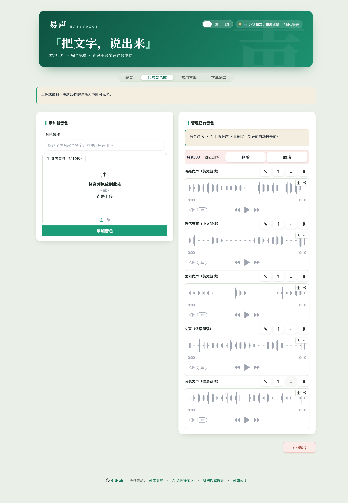
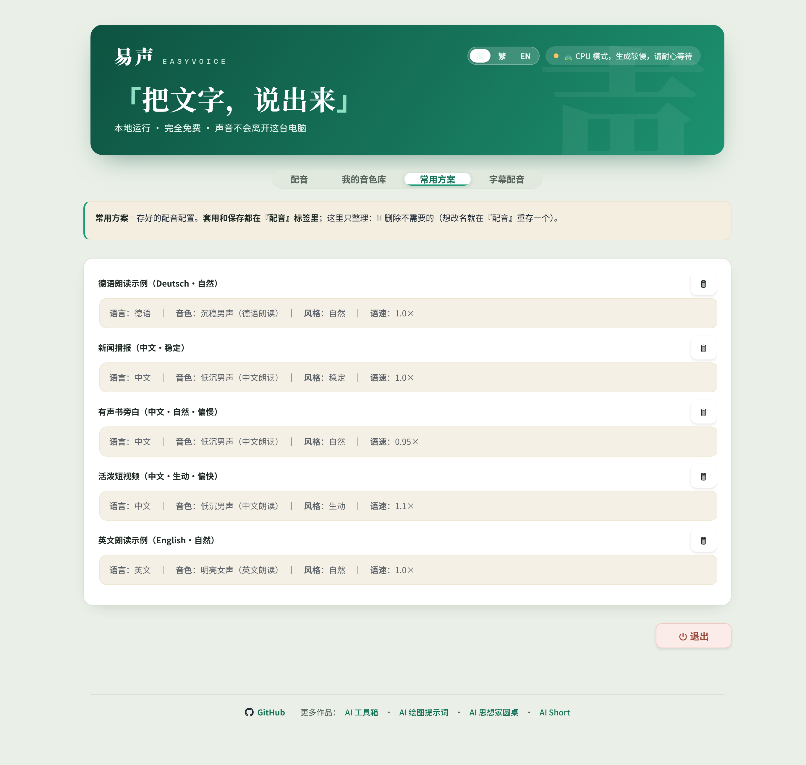
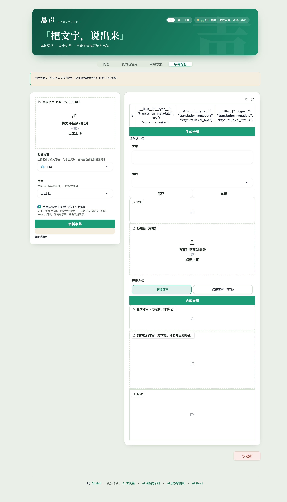
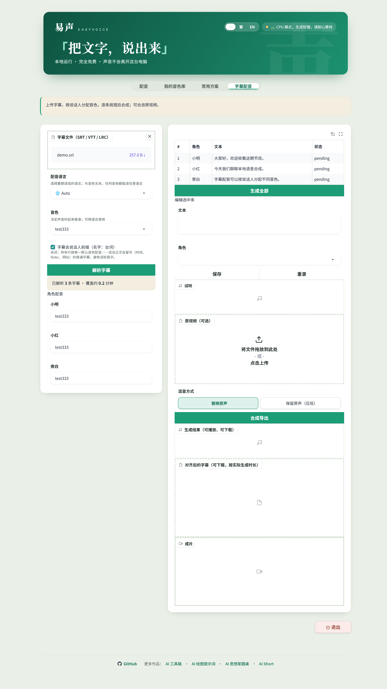

覆盖：全部 4 个标签页 + 全局（hero / 语言切换 / 状态胶囊 / 退出 / 页脚）+ 三语文案总表。 每条改动标注 是否动后端 与 同轮消费者（改 A 必须同轮改 B 的清单），批准后按此整单执行。

hero 右上角「简/繁/EN」胶囊：选中态样式（白底 + 玉绿字）被 .ev-lang a{color:#EAF7F0} 的近邻规则在部分渲染时序下压过，实拍中「简」呈白底白字。
同轮消费者：仅 CSS specificity，一处加 !important 提权即可；无后端。
现状：🐢 CPU 模式，生成较慢，请耐心等待 → 改后：CPU 模式 · 生成较慢，长文可分段（去掉乌龟表情与命令式；GPU 侧「⚡ 显卡加速中」保留）。
同轮消费者：banner.cpu 三语文件同步；无逻辑引用该文案。
现状：退出按钮单独浮在页面右下，离页脚 100+px，视觉上是"孤儿"。改后：并入页脚行 —— 左侧 GitHub / 更多作品，右侧退出（保持红色淡底、保持二次语义不变）。
同轮消费者：ev-exitbar 行并入 _footer_html 所在行；exit_note 文案落点随之移；按钮 id/class 不变，do_exit 与测试不动。
Gradio 默认 chevron 旋转 90°/0°，与本设计的 ▼/▲ 语义相反。改 CSS：收起时朝下、展开时朝上。同轮消费者：无。

保存方案是低频动作，却占据首屏左列最显眼收尾位；同时右列「文本·生成」卡片下方到页脚空 400+px。改后：把「保存为方案」折进左列一个次级折叠（与「高级设置」同款样式，默认收起），左列缩短约 120px；「套用方案」下拉保持置顶。
同轮消费者：dub_pname/dub_save 移入新 Accordion（事件接线不变）；_relabel_updates 加新 accordion 标题键；preset.save_title 键复用为折叠标题。
现状：top_p —— 高级采样参数，保持默认即可（不懂可忽略）。
改后：采样多样性（top_p）—— 一般不用动；「风格」已配好联动值。（top_k 同款）。参数名保留在括号里，方便查资料时对得上。
同轮消费者：adv.top_p/adv.top_p_info/adv.top_k/adv.top_k_info 三语同步。
播放器本身就带播放/下载按钮，括号说明是冗余；字幕页同一 label 复用，一并生效。同轮消费者：field.result 三语。
实拍：默认 2048 时把手贴在最左，微调困难。改后：换成档位下拉（1 分钟≈750 / 3 分钟≈2250 / 5 分钟≈3750 / 10 分钟≈7500 / 自定义滑杆），token 折算说明保留。若不想动组件，退一步方案：滑杆改对数感档位 可选。
同轮消费者：_PKEYS localStorage 持久化（值仍是 int，兼容）；do_generate/do_tok_estimate 入参不变；max_tokens.change→tok_est 接线保留。


改后：一行 = 名称 + ▶试听 + ✎ ↑ ↓ 🗑（同一行高 ~44px）；点 ▶ 才在该行下方展开播放器（同一时刻最多展开一行，再点 ▶ 收起）。列表 6 条从 ~1200px 缩到 ~300px，「添加新音色」卡片与列表首屏同高。
同轮消费者：_render_voices（新增 _vopen State；Audio 改 visible 切换）；voice.manage_hint 文案加「点 ▶ 试听」；删除/编辑态行样式复用现有 ev-vrow。
实拍为白底黑字，与「取消」几乎同权重，误点风险方向反了。给 .ev-vrow-del .stop 补红色（背景 #C0392B / 白字），「取消」保持次级。同轮消费者：音色行与方案行共用此条 CSS，一次生效。
括号解释挪进上方引导条（voice.hint 已有"上传或录制…"，不重复）。同轮消费者：voice.ref_preview 三语。

现状：常用方案 = 存好的配音配置。套用和保存都在『配音』标签里；这里只整理：🗑 删除不需要的（想改名就在『配音』重存一个）。
改后：这里整理已存的方案：删除不需要的。套用与保存都在「配音」页进行；改名 = 在配音页用新名字重存一遍再删旧的。
同轮消费者：guide.presets 三语；guide.tts 是零引用死键，随 B6 一并删。
preset.empty 写「点【存为方案】」，实际按钮叫「保存为方案」。统一为按钮名。同轮消费者：preset.empty 三语。


__i18n__{"key":"sub.col_speaker"} 原始 JSON根因：gr.Dataframe(headers=[I18N(...)]) 的 i18n 代理对象不被 Dataframe 表头解析（其它组件都支持，唯独这里塌了）；load 后的 relabel 又晚于首帧。改后：headers 初始用构建期简体纯字符串，本地化仍走 _relabel（已存在），删掉 headers 里的 I18N() 调用。
同轮消费者：ui.py sub_table 构造一处；_relabel_updates 已覆盖 headers，不动；测试无逐字钉。
pending / dirty / ok / error开发者内部值直达用户。改后：_sub_table 按请求语言映射为「待生成 / 已改动 / 完成 / 失败」（新增 st.* 三语键），所有回传表格的 handler 统一走映射。
同轮消费者：_sub_table 及全部调用点（parse / select / edit / reroll / gen_all / export 后刷新）；语言来源用已有 _vloc State；test_dubbing_project 若断言内部值仍用原枚举，仅 UI 层映射。
| # | 角色 | 文本 | 状态 |
|---|---|---|---|
| 1 | 小明 | 大家好，欢迎收看这期节目。 | 完成 |
| 2 | 小红 | 今天我们聊聊本地语音合成。 | 待生成 |
| 3 | 旁白 | 字幕配音可以按说话人分配不同音色。 | 已改动 |
| 4 | 旁白 | （合成失败的行） | 失败 |
现状：编辑选中条、混音方式、合成导出、三个结果位全部在上传前就摆出来（现状⑥红框 ~1500px 空壳）。改后按流程三段：① 上传解析 → ② 角色配音 + 逐条生成 → ③ 合成导出；②③默认隐藏，解析成功/首次生成后依次出现。「生成全部」按钮旁加计数徽标（如「生成全部 · 3 条待生成」）。
同轮消费者：do_sub_parse 追加 visible 更新；tab_subtitle.select 复位时同步隐藏；_relabel_updates 不受影响（组件还在，只是 hidden）；sub.guide 文案改写为三段式导语（T6）。
配音语言 · 默认音色 · 角色前缀开关 · 解析字幕
现状：未选行时点按钮弹「在上表点选一行以编辑」，属于事后诸葛。改后：未选行时两按钮 interactive=False，编辑框 placeholder 显示该提示；选中后恢复。同轮消费者：do_sub_select/do_sub_parse 追加按钮状态更新；sub.select_hint 键复用为 placeholder。
勾选框文案是陈述句，用户要读 info 才知道勾上代表"我的字幕长这样"。改后标签：字幕里带「名字：台词」前缀；info 首句改为「按前缀自动拆分角色；不确定就关掉，全部用默认音色。」同轮消费者：sub.detect_speakers(_info) 三语。
只列有改动的键；未列出的键保持原样。改后列即最终落地值。
| 键 | 现状 | 改后 | 关联 |
|---|---|---|---|
| banner.cpu | CPU 模式 · 生成较慢，长文可分段 | T1 | |
| field.result | 生成结果 | T3 | |
| adv.top_p / adv.top_k | 采样多样性（top_p）/ 采样候选数（top_k） | T2 | |
| adv.top_p_info / top_k_info | 一般不用动；「风格」已配好联动值。 | T2 | |
| adv.hint | 都有合理默认值，直接跳过即可；想微调声音再进来。 | 口吻统一 | |
| voice.ref_preview | 试听 | T4 | |
| voice.hint | 上传或录制一段约 10 秒的清晰人声即可克隆；录好后在「试听」里先听一遍。 | T4 承接 | |
| preset.empty | 还没有方案。在「配音」页调好后点「保存为方案」即可。 | B5 | |
| guide.presets | （见 §3 改后） | T5 | |
| sub.guide | 三步：① 上传字幕并解析 ② 给角色配音色、逐条生成 ③ 合成导出（可合进原视频）。 | U2 | |
| sub.detect_speakers | 字幕里带「名字：台词」前缀 | T6 | |
| sub.detect_speakers_info | 按前缀自动拆分角色；不确定就关掉，全部行用默认音色（正文含冒号时不易误拆）。 | T6 | |
| st.pending / st.dirty / st.ok / st.error | （新增） | 待生成 / 已改动 / 完成 / 失败 | B2 |
| sub.gen_all | 生成全部（{n} 条待生成）；n=0 时退回「生成全部」 | U2 徽标 | |
| app.exit_done | 已退出，可直接关闭此页面。 | U4 同区 | |
| hero.trust | 本地运行 · 完全免费 · 声音不会离开这台电脑 | 不动（信任语，保留） | — |
guide.tts · voice.delete · voice.select · voice.rename · voice.new_name · status.generating_gpu · status.generating_cpu · sub.generate · preset.apply · preset.delete · err.need_voice_rename · err.need_voice_pick · voice.move_up · voice.move_down · edit.edit · voice.reaudio · sub.col_idx · preset.save_hint
均为早期界面重构遗留（旧按钮/旧面板的文案），现无任何 py/HTML 消费。删除后 test_three_locales_share_keys（三语键集必须一致）仍绿——前提是三语同步删。
同轮消费者：三个 locale JSON 文件；无代码改动。
① 先修 B1/B2/B3/B4/B5/B6（缺陷类，无口味空间）→ ② 布局/后端类 U1–U5、U9、U10 → ③ 文案表整单落地（三语）。
验证：pytest 全绿 + UI-only 起服复拍同机位对比图（含 en / zh-Hant 各一张抽查）；U1/U2 需在浏览器里点一遍真实流程（试听展开、三段出现）再交验收。
注：本稿截图来自 gradio 6.29 的 UI-only 环境；集成包 runtime 版本未锁，若包内 Gradio 渲染有差异（如折叠箭头、stop 按钮底色），落地时以包内复拍为准微调。